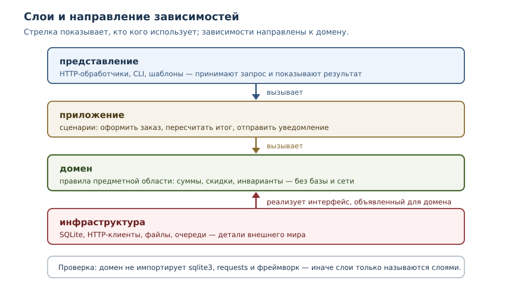
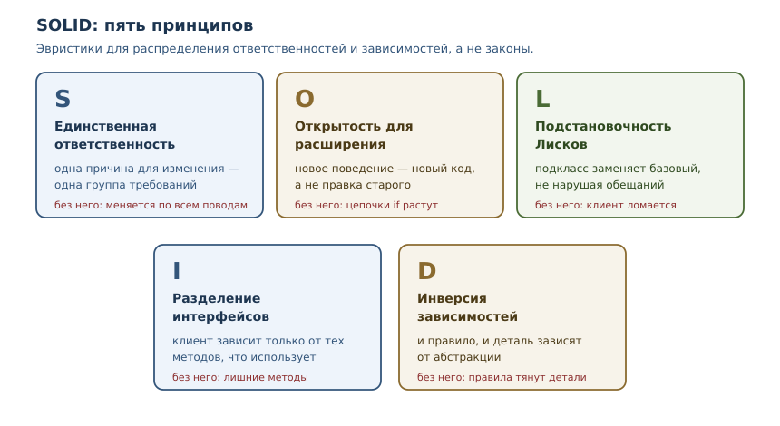

Архитектура, SOLID и паттерны
Принципы проектирования систем и паттерны, которые решают реальные задачи.
В этой главе
Программа, которая работает сегодня, завтра должна меняться: добавляются функции, меняются требования, подключаются новые сервисы. Архитектура — это ответ на вопрос, насколько дорого обойдётся каждое такое изменение. В этой главе мы разберём, что делает структуру программы устойчивой, как принципы SOLID помогают принимать решения и почему паттерны — словарь для обсуждения, а не список обязательных конструкций.
44.1 Что вы сможете после этой главы
- объяснять архитектуру через направление зависимостей, а не через папки;
- раскладывать программу на слои так, чтобы бизнес-логика не зависела от базы и веб-фреймворка;
- применять пять принципов SOLID и видеть, когда они превращаются в догму;
- внедрять зависимости через конструктор и подменять их в тестах;
- узнавать паттерны «адаптер» и «репозиторий» в чужом коде и понимать, когда их стоит вводить.
44.2 Архитектура — это решения о зависимостях
Архитектура — совокупность решений о структуре системы: какие в ней крупные части, где проведены границы и в какую сторону направлены зависимости. Не каталоги и не диаграммы сами по себе, а именно правила: что от чего может зависеть, а что — нет.
Два понятия из главы 30 описывают качество этой структуры.
- Связность (cohesion) — насколько содержимое одной части относится к одной задаче. Высокая связность означает, что модуль меняется целиком и по одной причине.
- Связанность (coupling) — насколько части зависят друг от друга. Низкая связанность означает, что изменение одной части не тянет за собой другую.
Хорошая архитектура повышает связность и понижает связанность. Практический критерий проще: сколько файлов нужно открыть, чтобы добавить одну функцию, и сколько сломается, если изменится формат хранения данных. Если ответ «пять» и «половина проекта», структура стоит внимания.
44.3 Слоистость
Слоистость — разделение системы на уровни, где зависимости направлены в одну сторону, к домену, а инфраструктура реализует интерфейсы, объявленные для домена. Типичный набор для прикладной программы:
| Слой | Ответственность | Примеры |
|---|---|---|
| представление | принимает запрос и показывает результат | HTTP-обработчики, CLI, шаблоны |
| приложение | выполняет сценарии использования | «оформить заказ», «пересчитать итог» |
| домен | правила предметной области | суммы, скидки, инварианты |
| инфраструктура | детали внешнего мира | база, сеть, файлы, очереди |

Главное правило: зависимости направлены к домену. Домен описывает правила и не знает, откуда пришли данные и куда уйдут. Приложение вызывает домен и работает с внешним миром через интерфейсы. Представление преобразует запрос в вызов приложения. Инфраструктура реализует интерфейсы, объявленные внутри.
Проверить слоистость можно вопросом: может ли функция домена импортировать
sqlite3 или requests? Если да, домен связан с деталями, и тестировать его
придётся вместе с базой. Если нет, домен проверяется обычными тестами без
подготовки окружения.
Слоистость не обязана быть буквальной. В маленькой программе достаточно трёх модулей: правила, ввод-вывод, точка входа. Важно не число слоёв, а направление зависимостей и то, что правила не знают о деталях.
Углубление: как проверить границы
Правило «домен не импортирует инфраструктуру» можно проверить машинно, пока
нарушений мало: разобрать исходники через ast и посмотреть импорты. Такой
тест ловит нарушения раньше ревью.
import ast
domain_sources = {
"domain.py": "from decimal import Decimal\n",
"domain_pricing.py": "import sqlite3\n",
}
forbidden = {"sqlite3", "requests", "flask"}
def imports_of(source):
tree = ast.parse(source)
names = set()
for node in ast.walk(tree):
if isinstance(node, ast.Import):
names.update(alias.name for alias in node.names)
elif isinstance(node, ast.ImportFrom) and node.module:
names.add(node.module)
return names
for name, source in domain_sources.items():
print(name, sorted(imports_of(source)))
violations = [
name for name, source in domain_sources.items()
if imports_of(source) & forbidden
]
print("нарушения:", violations)
domain.py ['decimal']
domain_pricing.py ['sqlite3']
нарушения: ['domain_pricing.py']
В реальном проекте вместо словаря строк читают файлы пакета, а проверку включают в набор тестов. Это дешёвая защита от постепенного «затягивания» инфраструктуры в домен: один импорт не выглядит проблемой, а через полгода домен уже невозможно протестировать без базы.
44.4 SOLID
SOLID — набор из пяти принципов объектного проектирования, которые сформулировал Роберт Мартин (аббревиатуру предложил Майкл Фезерс). Принципы описывают, как распределять ответственности между классами и как направлять зависимости. Это эвристики: они помогают принимать решения, но не заменяют их и не являются законами.

Единственная ответственность
Единственная ответственность — у класса или модуля одна причина для изменения: одна группа людей или одно требование. Формулировка «делает одну вещь» вводит в заблуждение: класс может делать несколько операций, если все они служат одной причине.
class Report:
def __init__(self, rows):
self.rows = rows
def as_text(self):
return "\n".join(self.rows)
class ReportStorage:
def __init__(self):
self.saved = []
def save(self, text):
self.saved.append(text)
return len(self.saved)
report = Report(["итог: 900", "позиций: 2"])
storage = ReportStorage()
print(report.as_text())
print("сохранено записей:", storage.save(report.as_text()))
итог: 900
позиций: 2
сохранено записей: 1
Пока формат отчёта и способ хранения в одном классе, изменение формата и
переход на другой носитель — две причины менять один файл, и они мешают друг
другу. Разделение даёт две независимые причины: Report меняется, когда
меняется представление данных, ReportStorage — когда меняется хранение.
Типичная ошибка — превращать принцип в дробление ради дробления. Класс из одного метода, который ничего не инкапсулирует, не стал лучше: он просто переехал в отдельный файл. Ответственность измеряется причинами изменения, а не числом строк.
Открытость для расширения, закрытость для изменения
Принцип требует, чтобы новое поведение добавлялось новым кодом, а не правкой существующего. На практике это означает замену цепочек условий на полиморфизм.
class NoDiscount:
def apply(self, total):
return total
class PercentDiscount:
def __init__(self, percent):
self.percent = percent
def apply(self, total):
return total - total * self.percent // 100
class FixedDiscount:
def __init__(self, amount):
self.amount = amount
def apply(self, total):
return max(0, total - self.amount)
def final_price(total, discount):
return discount.apply(total)
print(final_price(1000, NoDiscount()))
print(final_price(1000, PercentDiscount(10)))
print(final_price(1000, FixedDiscount(150)))
1000
900
850
Новый вид скидки добавляется отдельным классом, а final_price не меняется.
Абсолютной закрытости не бывает: рано или поздно интерфейс скидки придётся
поменять. Принцип полезен как направление мысли, а не как обещание «никогда не
трогать старый код».
Подстановочность Лисков
Принцип подстановки Барбары Лисков: объект подкласса должен заменять объект базового класса, не нарушая корректность программы. Речь не о синтаксисе наследования, а о поведении: клиент, написанный для базового типа, не должен узнавать, что получил другой.
class Account:
def withdraw(self, amount):
raise NotImplementedError
class RegularAccount(Account):
def __init__(self, balance):
self.balance = balance
def withdraw(self, amount):
self.balance -= amount
return self.balance
class FixedDeposit(Account):
def __init__(self, balance):
self.balance = balance
def withdraw(self, amount):
raise ValueError("снятие запрещено до окончания срока")
def pay_rent(account, amount):
return account.withdraw(amount)
print("обычный счёт:", pay_rent(RegularAccount(1000), 300))
try:
pay_rent(FixedDeposit(1000), 300)
except ValueError as error:
print("подстановка сломана:", error)
обычный счёт: 700
подстановка сломана: снятие запрещено до окончания срока
FixedDeposit наследует Account, но не может использоваться там, где ждут
счёт со снятием. Иерархия выглядит правильной, а контракт нарушен.
Исправление — не наследование «похожего», а отдельные интерфейсы:
Withdrawable с методом снятия и Balanceable с чтением баланса. Клиент
зависит только от той возможности, которая ему нужна.
Разделение интерфейсов
Клиент не должен зависеть от методов, которые он не использует. Большой интерфейс «устройство со всем сразу» заставляет реализовывать лишнее и ломает подстановку: принтер без сканера — не многофункциональное устройство.
class MultiFunctionDevice:
def print_document(self, text):
return f"печать: {text}"
def scan_document(self):
return "скан: страница"
class PrinterOnly:
def print_document(self, text):
return f"печать: {text}"
def scan_document(self):
raise NotImplementedError("сканер не поддерживается")
def print_all(device, documents):
return [device.print_document(text) for text in documents]
def process(device, documents):
printed = print_all(device, documents)
return printed, device.scan_document()
try:
process(PrinterOnly(), ["отчёт"])
except NotImplementedError as exc:
print("толстый интерфейс:", exc)
for line in print_all(PrinterOnly(), ["отчёт", "счёт"]):
print(line)
толстый интерфейс: сканер не поддерживается
печать: отчёт
печать: счёт
process требует и печать, и сканирование, поэтому принтер без сканера его
ломает. print_all требует только печать и работает с тем же объектом. Значит,
интерфейс нужно разделить: клиенту, которому нужна одна возможность, не следует
зависеть от второй. В Python это делают через отдельные протоколы и абстрактные
классы из главы 29, а не через один большой базовый класс.
Инверсия зависимостей
Высокоуровневый модуль не должен зависеть от низкоуровневого; оба должны зависеть от абстракции. В Python абстракция — это протокол или абстрактный класс: описание того, что нужно, без указания, как это сделано.
from typing import Protocol
class OrderRepository(Protocol):
def save(self, order_id: str, total: int) -> None: ...
def total(self, order_id: str) -> int: ...
class InMemoryOrders:
def __init__(self):
self._data = {}
def save(self, order_id, total):
self._data[order_id] = total
def total(self, order_id):
return self._data[order_id]
class OrderService:
def __init__(self, repository: OrderRepository) -> None:
self.repository: OrderRepository = repository
def place(self, order_id, amount):
total = amount * 90 // 100
self.repository.save(order_id, total)
return total
service = OrderService(InMemoryOrders())
print("итог:", service.place("A-1", 1000))
print("в хранилище:", service.repository.total("A-1"))
итог: 900
в хранилище: 900
OrderService не знает, где хранятся заказы: в памяти, в SQLite или в
удалённом сервисе. Он зависит от протокола, а конкретную реализацию получает
снаружи: аннотация repository: OrderRepository фиксирует контракт, а
InMemoryOrders соответствует ему структурно, без наследования. Это и есть
инверсия: направление зависимости развернулось, и деталь зависит от правила, а
не наоборот.
44.5 Внедрение зависимостей
Внедрение зависимостей — приём, при котором объект получает нужные ему зависимости извне, а не создаёт их сам. В Python чаще всего это параметр конструктора: сервис принимает репозиторий, клиент или часы.
# test_orders.py
from orders import OrderService
class FakeOrders:
def __init__(self):
self.saved = []
def save(self, order_id, total):
self.saved.append((order_id, total))
def total(self, order_id):
raise AssertionError("в тесте не нужен")
def test_place_saves_total():
fake = FakeOrders()
service = OrderService(fake)
assert service.place("A-1", 1000) == 900
assert fake.saved == [("A-1", 900)]
$ uv run pytest -q
1 passed in 0.02s
В тесте вместо базы подставлен FakeOrders, который записывает вызовы в
список. OrderService — тот же класс из раздела об инверсии зависимостей: его
конструктор уже принимает OrderRepository, поэтому подмена не требует
отдельной копии сервиса. Тест работает без файлов и сети, а проверяет именно то,
что нужно: правильную сумму и факт сохранения. Это главная практическая польза
внедрения зависимостей — не «модная архитектура», а возможность подменить
дорогую деталь дешёвой.
Три способа внедрения:
- Через конструктор — основной: зависимость обязательна и видна в сигнатуре.
- Через параметр метода — когда зависимость нужна только одной операции.
- Через контейнер — фреймворк собирает объекты по описанию; оправдан в больших приложениях, где ручная сборка стала громоздкой.
Внедрение зависимостей не требует библиотеки. Фреймворк добавляет удобство конфигурации, но не меняет идею: зависимости приходят снаружи. И не путайте два термина: инверсия зависимостей — принцип про направление зависимостей, внедрение зависимостей — приём передачи готовых объектов.
44.6 Паттерны проектирования
Паттерн проектирования — названное типовое решение повторяющейся задачи проектирования в определённом контексте. У паттерна есть имя, задача, решение и последствия. Имя — главная ценность: оно позволяет обсудить структуру одной фразой.
Паттерны — не чек-лист и не доказательство качества. Применённый без задачи паттерн добавляет классы и уровни, не решая ничего. Полезен и обратный ход: сначала появляется повторяющаяся боль, потом — решение, и только потом выясняется, что у решения есть имя.
Паттерн «адаптер»
Паттерн «адаптер» — обёртка, которая приводит интерфейс одного компонента к интерфейсу, ожидаемому другим. Он нужен, когда менять чужой код нельзя или невыгодно.
class ThirdPartyWeather:
def fetch(self, city):
return {"temp": 21, "code": city.upper()}
class WeatherAdapter:
def __init__(self, client):
self.client = client
def get_forecast(self, city_code):
raw = self.client.fetch(city_code)
return {"temperature_c": raw["temp"], "city_code": raw["code"]}
class WeatherReport:
def __init__(self, source):
self.source = source
def summary(self, city):
data = self.source.get_forecast(city.upper())
return f"{data['city_code']}: {data['temperature_c']} °C"
adapter = WeatherAdapter(ThirdPartyWeather())
print(WeatherReport(adapter).summary("москва"))
МОСКВА: 21 °C
Чужой клиент умеет только fetch и отдаёт поля temp и code, а
WeatherReport ждёт get_forecast и поля temperature_c и city_code.
Адаптер переводит и имя метода, и формат данных: без него WeatherReport не
мог бы работать с этим клиентом напрямую. Когда библиотеку заменят, изменится
только адаптер.
Адаптер особенно полезен для тестов: вместо чужого клиента подставляется
адаптер с заранее заданным ответом.
Паттерн «репозиторий»
Паттерн «репозиторий» — посредник между доменом и хранилищем, который представляет хранилище как коллекцию объектов предметной области. Домен просит «все заметки» или «сохрани заметку», не зная про таблицы и SQL.
import sqlite3
class InMemoryNoteRepository:
def __init__(self):
self.items = []
def add(self, text):
self.items.append(text)
return len(self.items)
def all(self):
return list(self.items)
class SqliteNoteRepository:
def __init__(self, connection):
self.connection = connection
self.connection.execute("CREATE TABLE notes (id INTEGER PRIMARY KEY, text TEXT)")
def add(self, text):
cursor = self.connection.execute("INSERT INTO notes (text) VALUES (?)", (text,))
return cursor.lastrowid
def all(self):
rows = self.connection.execute("SELECT text FROM notes ORDER BY id")
return [row[0] for row in rows]
def render(repository):
return " | ".join(repository.all())
memory = InMemoryNoteRepository()
memory.add("первая")
memory.add("вторая")
print("в памяти:", render(memory))
connection = sqlite3.connect(":memory:")
sqlite_repo = SqliteNoteRepository(connection)
sqlite_repo.add("первая")
sqlite_repo.add("вторая")
print("в базе:", render(sqlite_repo))
в памяти: первая | вторая
в базе: первая | вторая
Одна и та же функция render работает с двумя реализациями: временной
памятью для тестов и SQLite для работы. Запросы параметризованы — об этом
заботится репозиторий, а не вызывающий код (глава 41).
У репозитория есть границы. Если интерфейс начинает повторять SQL — с фильтрами, сортировками, соединениями, — абстракция протекает: домен всё равно зависит от возможностей базы. В таком случае честнее дать специализированный запрос с понятным именем, чем имитировать универсальный язык запросов. Репозиторий не заменяет знание SQL и не равен ORM.
Другие паттерны
Названия полезно знать, но вводить их стоит по задаче. Стратегия — взаимозаменяемые алгоритмы за общим интерфейсом; скидки выше — её частный случай. Фабрика — создание объектов, когда конструктор недостаточно выразителен. Фасад — простой интерфейс над сложной подсистемой. Декоратор в значении паттерна — добавление поведения обёрткой; в Python он часто реализуется декораторами из главы 22.
44.7 Как выбирать
Три вопроса перед введением слоя, интерфейса или паттерна.
- Какая боль решается? Если ответ «так принято» — не решается ничего.
- Сколько изменений это упростит? Абстракция оправдана, когда подстановок две и больше: реализация, тестовая заглушка, вторая база.
- Сколько стоит понимание? Каждый новый слой и интерфейс нужно читать. Выигрыш в гибкости оплачивается ясностью.
Полезное правило: третье повторение. Два похожих места — совпадение, три — закономерность. Абстракция, введённая после третьего повторения, обычно удачнее, чем угаданная заранее. И обратное: если абстракция оказалась неудобной, её нужно упрощать, а не защищать.
| Ситуация | Инструмент |
|---|---|
| нужно подменить базу в тестах | интерфейс репозитория и внедрение через конструктор |
| чужой API отдаёт данные в другом формате | адаптер |
| правила смешаны с обработкой запроса | разделение слоёв |
| одна функция выбирает поведение по типу | полиморфизм вместо условий |
| класс меняется по нескольким причинам | разделение ответственностей |
44.8 Типичные ошибки
- Слои на бумаге. Каталоги
domain,services,infrastructureесть, а домен импортируетsqlite3иrequests. Смотрите на импорты, а не на названия папок. - SOLID как догма. Дробление классов ради «одной ответственности» и интерфейсы ради «инверсии» без второй реализации дают сложность без пользы.
- Наследование вместо контракта. Подкласс, который не может делать то, что обещает базовый класс, ломает подстановку.
- Паттерн вместо решения. Паттерн, введённый до появления задачи, добавляет код, который никто не просил.
- Протекающая абстракция. Репозиторий, который повторяет SQL, или «универсальный» интерфейс, который всё равно требует деталей базы.
- Фреймворк внедрения зависимостей в маленьком проекте. Для трёх классов достаточно параметров конструктора.
- Отсутствие тестов на границах. Архитектура без тестов не проверяется: слои ломаются незаметно, пока кто-то не импортирует базу в домен.
44.9 Упражнения
1. Слои и импорты
Дан набор модулей: domain.py, storage.py, handlers.py, app.py.
domain.py импортирует sqlite3, handlers.py содержит расчёт скидки,
storage.py импортирует handlers.py. Нарисуйте текущее направление
зависимостей, найдите нарушения слоистости и предложите исправление.
2. Единственная ответственность
Класс Invoice умеет считать сумму, форматировать её в текст и отправлять по
электронной почте. Разделите его на части с одной причиной изменения каждая и
объясните, какие требования будут менять каждую часть.
3. Открытость для расширения
Функция shipping_cost(country, weight) содержит цепочку if для пяти стран.
Перепишите её так, чтобы новая страна добавлялась новым классом или записью,
а не правкой функции. Объясните, что именно стало закрыто для изменения.
4. Нарушение подстановки
Класс ReadOnlyList наследует list и поднимает ValueError в append.
Покажите, как это ломает функцию, написанную для list, и предложите
исправление через композицию или отдельный интерфейс.
5. Разделение интерфейсов
Опишите протокол Storage с методами read, write, delete, list.
Клиенту, который только читает, нужен один метод. Разделите протокол на части
и покажите, как клиент зависит только от нужной.
6. Инверсия зависимостей
Сервис уведомлений создаёт SmtpClient внутри конструктора. Перепишите его
так, чтобы клиент передавался снаружи, и покажите два варианта подстановки:
настоящий клиент и заглушка, записывающая вызовы.
7. Внедрение зависимостей
Напишите сервис PriceService, который зависит от источника курсов валют.
Реализуйте два источника: фиксированный словарь и заглушку с журналом
вызовов. Проверьте расчёт цены в обоих случаях.
8. Адаптер
Есть чужой клиент с методом fetch(city) и структурой ответа
{"temp": 21, "code": "MSK"}. Напишите адаптер к интерфейсу
get_forecast(city_code) -> {"temperature_c": int, "city_code": str} и
проверьте его на фиктивном клиенте.
9. Репозиторий
Реализуйте репозиторий заметок с методами add, all в двух вариантах: в
памяти и на SQLite. Проверьте, что одна и та же функция отчёта работает с
обоими. Объясните, где заканчиваются возможности такого репозитория.
10. Мини-задача: оформление заказа
Спроектируйте небольшой сценарий: домен считает итог заказа со скидкой, приложение сохраняет его через репозиторий, представление печатает строку. Реализуйте три слоя так, чтобы домен не импортировал хранилище, и напишите тест с репозиторием в памяти.
44.10 Проверка понимания
- Что делает архитектуру хорошей: структура каталогов или направление зависимостей?
- Что такое связность и связанность и как они соотносятся?
- Почему домен не должен импортировать
sqlite3илиrequests? - Сформулируйте принцип единственной ответственности без слов «делает одну вещь».
- Почему подстановочность Лисков — про поведение, а не про наследование?
- Чем инверсия зависимостей отличается от внедрения зависимостей?
- Когда паттерн «адаптер» оправдан, а когда это лишний слой?
- Почему репозиторий может «протекать» и что с этим делать?
44.11 Связи
Глава завершает линию объектного проектирования: связность и связанность из главы 30, композиция из главы 27, интерфейсы и протоколы из главы 29. Тесты из главы 32 дают инструмент проверки границ, а параметризованные запросы из глав 36 и 41 — безопасную работу репозитория. Декораторы из главы 22 и метапрограммирование из главы 43 объясняют, как устроены инфраструктурные решения, которые в этой главе стали архитектурными.
Дальше — Git, CI, релизы и сопровождение: архитектура проверяется не на диаграммах, а в командной работе, автоматических проверках и выпусках.